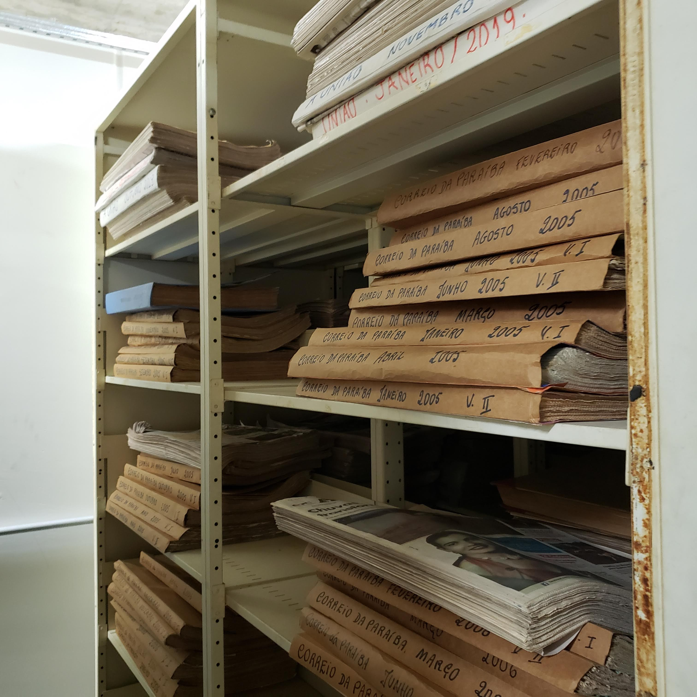
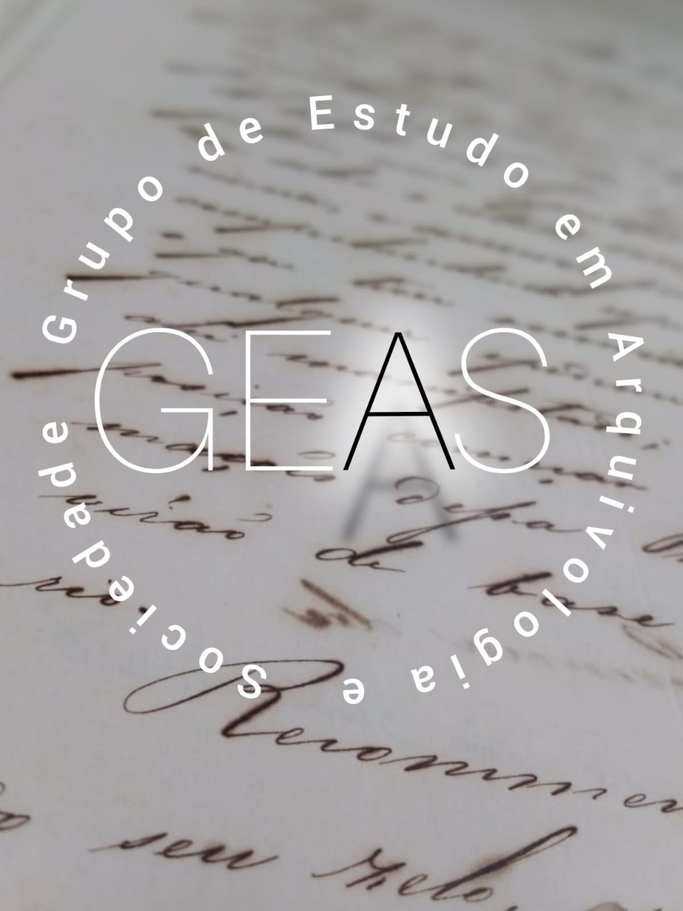

NEGRUM MEMORIA
BEM VINDO AO NEGRUM MEMORIA
esse sistema foi criado pelo GEAS (Grupo de Estudo em Arquivologia e Sociedade) com o objetivo de levar conhecimento e mostrar um pouco da historia daqueles que não puderam registrar a sua historia.
Antes de começar a usar o NEGRUM MEMORIA atente-se ao manual de instruções.
Nesse espaço você encontrará documentos de escravizados e fichas guias para auxiliar o entendimento do conteudo dos documentos
os documentos contidos nesse sistema foram todos pesquisados em João Pessoa
Nesse local se encontra 2 instituições que foram local de pesquisa: o Arquivo Histórico de João pessoa, e Igreja de São francisco
Para ser direcionado para a página desejada clique em uma das fotos abaixo para abrir a página seguinte
arquivo historico

R. Abdias Gomes de Almeida, 800 - Tambauzinho, João Pessoa - PB, 58042-100
imagem tirada pela página retratos de Jampa
arquivo historico
 R. Vig. Sarlen, 26 - Centro
R. Vig. Sarlen, 26 - Centro
quem somos nós?

seja igual um girassol, de costa para o escuro e de frente para luz..
Agradecimentos
@retrato_de_jampa